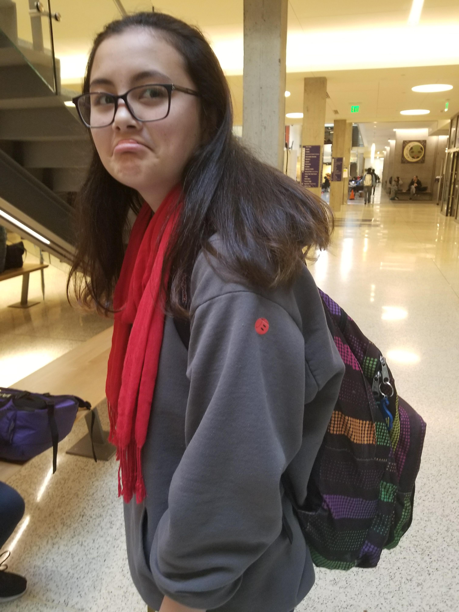
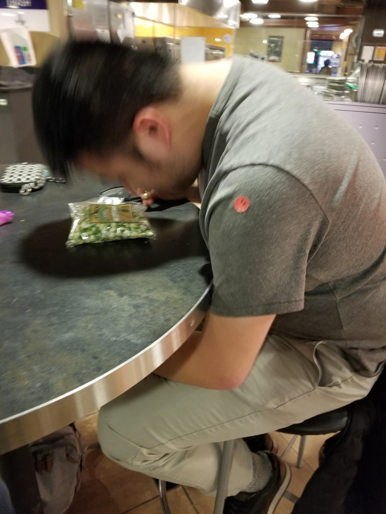
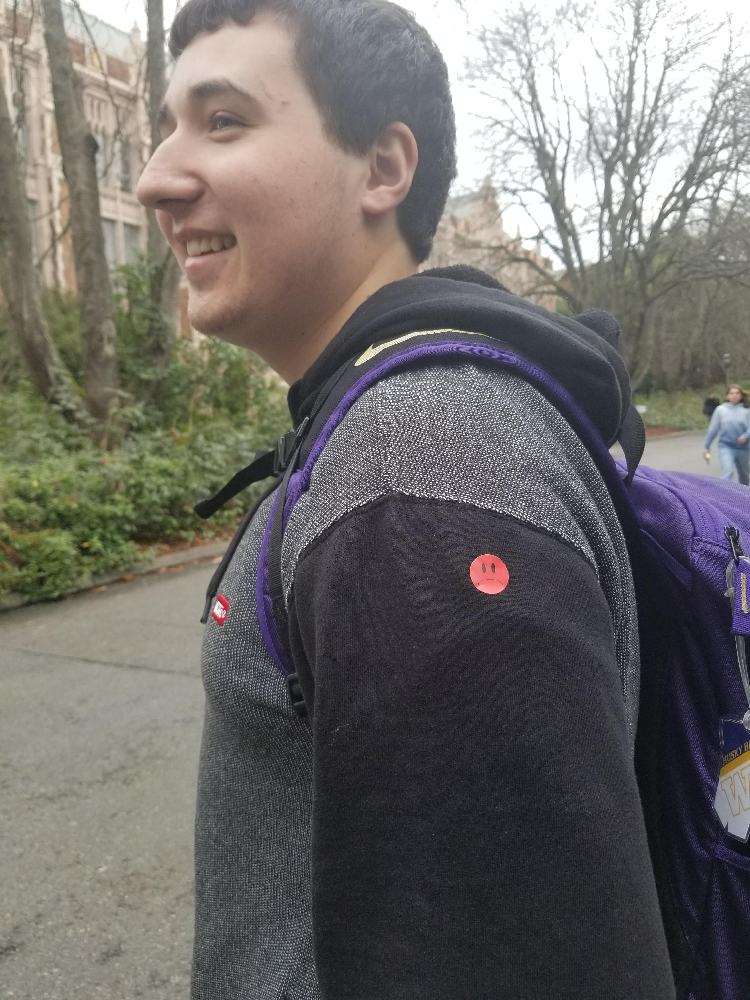
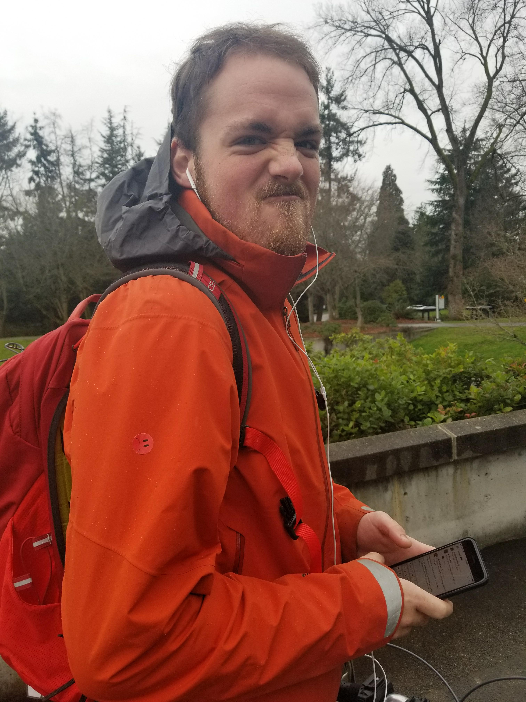

By Caitlyn Rivera

Every Winter and Spring quarter, the Brotherhood Committee puts on a project called
Brotherhood Assassin. Brotherhood Assassin is a game in which brothers are given targets,
and must mark their target with a “sad boi” sticker. It encourages brothers to stalk each other in
a free-for- all fight to the death, last one standing wins.. Every week in chapter, there is a

moment of silence for the brothers that were assassinated in the game that week., Any who
survive, , are crowned as the winners of that respective game.Becoming the official Master
Assassin of the Gamma Chapter of Kappa Kappa Psi was no easy feat. Tracking down and
taking out 10 brothers while still going through the membership education process was awkward
at first, but by putting effort into finding and assassinating my targets, I discovered that assassin
is a great way to break the ice between brothers who might not know each other very well;
Nothing says brotherly love more than stalking and “killing” a fellow brother with the infamous
sad boi sticker.

I’d like to take a moment to thank several people. Without them, this game wouldn’t be possible and I wouldn’t have earned the title of Master Assassin. First of all, shout- out to the following individuals for getting me the title itself: Alison, Panda, Robert, Michelle T., Cerys, Maranda, Jillian, Jasen, Kristen, and Jo. You all were great sports when it came time for me to hunt you all down, and I appreciate that. (P.S. it was an honor to tag you with the sad  bois). Also, many thanks to Oliver Kou and the Brotherhood Committee for putting the Brotherhood Assassin project on every quarter because it is a lot of fun to participate in. And most importantly, a BIG thank you to Jaimia Plancich for starting the project initially, always running the game, and making sure everything goes smoothly. Without your hard work and dedication, this game wouldn’t be possible—you are the true Master Assassin.